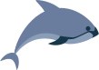
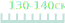

Вакіта
Також називають каліфорнійською морською свинею. Її існування підтвердили лише в 1985. Проживає лише в північній частині Каліфорнійської затоки. На даний момент найрідкісніший морський ссавець у світі. Тварини дуже полохливі й тримаються подалі від людей. Спеціально на вакіт ніхто не полював, вони випадково потрапляють в сітку при незаконній риболовлі.